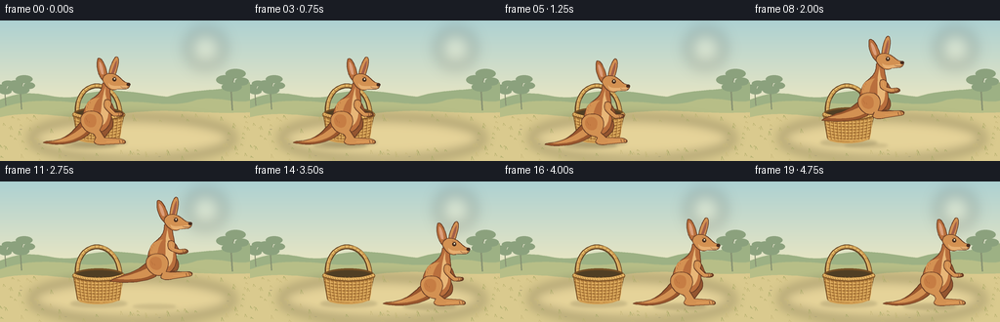
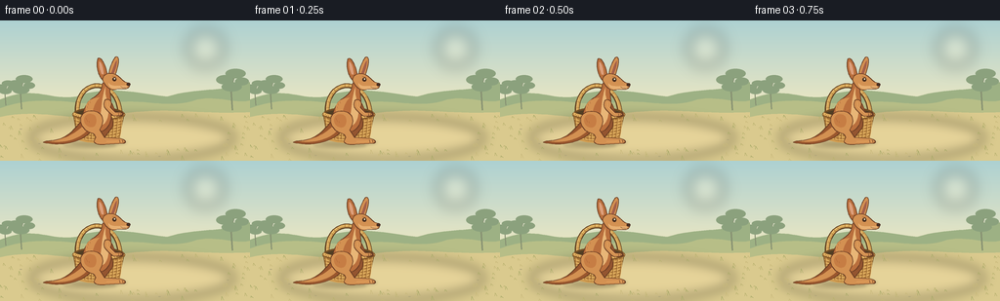

CODING AGENTS AS PIXEL WORLD MODELS
traex/GPT-6.1-Sol · dynamic_spatial_relationship_0033
点击播放 · 原生 RGB 像素
逐轮保存的候选
回放视频、检查图与代码变化。
每份候选均可单独播放。实际图片检查记录在下方工具轨迹中。
候选 01播放与检查图
点击播放 · 原生 RGB 像素


展开代码变化
--- 上一保存版本
+++ 本次保存版本
@@ -0,0 +1,184 @@
+from pathlib import Path
+import math
+import numpy as np
+from PIL import Image, ImageDraw, ImageFilter
+import artifact_io
+
+ROOT=Path(__file__).resolve().parent
+W,H,S=256,144,4
+rng=np.random.default_rng(18)
+
+# The illustration is drawn at four times delivery resolution for fine wicker
+# strands, clean silhouettes, and smoothly antialiased moving limbs.
+def path_points(commands):
+ pts=[]; cur=None
+ for c in commands:
+ if c[0]=='M': cur=(c[1],c[2]); pts.append(cur)
+ elif c[0]=='L': cur=(c[1],c[2]); pts.append(cur)
+ elif c[0]=='C':
+ a=cur; b=(c[1],c[2]); d=(c[3],c[4]); e=(c[5],c[6])
+ for t in np.linspace(0,1,18)[1:]:
+ u=1-t
+ pts.append((u*u*u*a[0]+3*u*u*t*b[0]+3*u*t*t*d[0]+t*t*t*e[0],u*u*u*a[1]+3*u*u*t*b[1]+3*u*t*t*d[1]+t*t*t*e[1]))
+ cur=e
+ return pts
+
+def poly(dr, pts, fill, outline=None, width=.65):
+ p=[(round(x*S),round(y*S)) for x,y in pts]
+ dr.polygon(p,fill=fill)
+ if outline: dr.line(p+[p[0]],fill=outline,width=max(1,round(width*S)),joint='curve')
+def shape(dr,cmd,fill,outline=None,width=.65): poly(dr,path_points(cmd),fill,outline,width)
+def line(dr,pts,fill,width=1): dr.line([(round(x*S),round(y*S)) for x,y in pts],fill=fill,width=max(1,round(width*S)),joint='curve')
+def ellipse(dr,box,fill,outline=None,width=1): dr.ellipse(tuple(round(p*S) for p in box),fill,outline,width=round(width*S))
+
+# Quiet sunlit bushland; a fixed camera preserves the spatial relation.
+bg=Image.new('RGB',(W*S,H*S)); arr=np.zeros((H*S,W*S,3),dtype=np.uint8)
+for y in range(H*S):
+ v=y/(H*S)
+ if v<.61:
+ t=v/.61; a=np.array([173,209,210]); b=np.array([236,231,194]); col=a*(1-t)+b*t
+ else:
+ t=(v-.61)/.39; col=np.array([205,203,144])*(1-t)+np.array([219,194,132])*t
+ arr[y,:,:]=col
+bg=Image.fromarray(arr); d=ImageDraw.Draw(bg)
+# Soft sun haze.
+layer=Image.new('RGBA',bg.size); ld=ImageDraw.Draw(layer)
+ellipse(ld,(192,10,229,47),(255,249,218,90)); layer=layer.filter(ImageFilter.GaussianBlur(8*S)); bg=Image.alpha_composite(bg.convert('RGBA'),layer).convert('RGB'); d=ImageDraw.Draw(bg)
+shape(d,[('M',0,81),('C',36,66,49,82,78,78),('C',111,65,148,76,171,78),('C',204,68,230,74,256,63),('L',256,101),('L',0,101)],(157,177,132))
+shape(d,[('M',0,90),('C',43,74,80,88,110,85),('C',151,79,172,92,202,81),('C',225,77,242,86,256,82),('L',256,110),('L',0,110)],(183,190,135))
+shape(d,[('M',0,99),('C',42,89,75,106,121,96),('C',175,88,207,97,256,94),('L',256,144),('L',0,144)],(218,202,142))
+# Diffuse sandy clearing.
+layer=Image.new('RGBA',bg.size); ld=ImageDraw.Draw(layer)
+ellipse(ld,(31,99,239,142),(240,219,163,130)); layer=layer.filter(ImageFilter.GaussianBlur(6*S)); bg=Image.alpha_composite(bg.convert('RGBA'),layer).convert('RGB'); d=ImageDraw.Draw(bg)
+# Sparse distant gum trees, never competing with the two subjects.
+for x,y,k in [(22,91,.66),(238,92,.8),(6,87,.48)]:
+ line(d,[(x,y),(x-2*k,y-28*k),(x+3*k,y-46*k)],(133,143,113),1.9*k)
+ line(d,[(x-1*k,y-23*k),(x-12*k,y-37*k)],(133,143,113),1*k)
+ for dx,dy,rx,ry in [(-10,-39,11,6),(4,-47,13,6),(12,-37,9,5),(-1,-30,13,6)]:
+ ellipse(d,(x+(dx-rx)*k,y+(dy-ry)*k,x+(dx+rx)*k,y+(dy+ry)*k),(139,161,125))
+# Individual muted grass blades and tiny stones.
+for i in range(165):
+ x=float(rng.uniform(0,256)); y=float(rng.uniform(99,144))
+ if 53<x<225 and 104<y<133: continue
+ col=[(168,170,104),(185,178,112),(200,185,123)][i%3]
+ length=float(rng.uniform(1.3,4.3))
+ line(d,[(x-1,y),(x-.8,y-length),(x+1,y)],col,.45)
+for x,y in [(39,126),(232,122),(162,139),(20,111),(66,138)]:
+ ellipse(d,(x,y,x+2.4,y+.8),(180,168,123))
+
+
+def basket(im):
+ dr=ImageDraw.Draw(im)
+ # Rear handle above the mouth is vital for a basket rather than a pot.
+ p=path_points([('M',79,96),('C',77,57,120,57,123,96)])
+ line(dr,p,(100,68,36),5)
+ line(dr,[(x+.3,y-.4) for x,y in p],(211,164,85),3)
+ line(dr,[(x-.7,y-.5) for x,y in p],(237,194,117),.7)
+ for q in np.linspace(.12,.88,13):
+ idx=int(q*(len(p)-2)); x,y=p[idx]; vx,vy=p[idx+1][0]-x,p[idx+1][1]-y
+ norm=math.hypot(vx,vy); line(dr,[(x-vy/norm*1.6,y+vx/norm*1.6),(x+vy/norm*1.6,y-vx/norm*1.6)],(151,106,52),.55)
+ ellipse(dr,(74,89,128,104),(112,77,37),(112,74,33),.8)
+ ellipse(dr,(78,91,124,100),(80,62,36))
+ body=[('M',75,96),('C',87,100,115,100,127,96),('L',122,120),('C',115,127,86,127,79,120),('L',75,96)]
+ shape(dr,body,(180,126,60),(112,77,36),.8)
+ # Wicker rows following the rounded surface.
+ for j in range(8):
+ y=98+j*3.1; l=76+(y-98)*.17; r=126-(y-98)*.17
+ pts=path_points([('M',l,y),('C',l+10,y+4.2,r-10,y+4.2,r,y)])
+ line(dr,pts,(223,174,94),1.55)
+ line(dr,[(x,yy+1.1) for x,yy in pts],(137,92,44),.5)
+ for i in range(13):
+ x=77+i*3.95
+ pts=path_points([('M',x,98),('C',x+(101-x)*.025,106,x+(101-x)*.06,115,x+(101-x)*.12,122)])
+ line(dr,pts,(158,108,49),.8)
+ line(dr,[(xx+.75,yy) for xx,yy in pts],(238,191,112),.55)
+ # Wide braided rim and bottom edge.
+ rim=path_points([('M',75,96),('C',87,102,115,102,127,96)])
+ line(dr,rim,(128,85,38),4.2); line(dr,[(x,y-.5) for x,y in rim],(232,182,101),2.7)
+ for t in np.linspace(0,1,22):
+ x=75+52*t; y=96+5*4*t*(1-t)
+ line(dr,[(x-.6,y-1.2),(x+.7,y+.9)],(156,107,50),.6)
+ line(dr,path_points([('M',81,122),('C',91,126,111,126,121,121)]),(211,158,81),1.8)
+
+OUT=(101,58,35); COAT=(185,111,61); LIGHT=(211,145,82); DARK=(154,87,46); BELLY=(232,182,119)
+
+def roo(im,x,ground,crouch=0,air=0,tilt=0,t=0):
+ dr=ImageDraw.Draw(im)
+ # Articulated coordinates; body compression and hind-foot tuck are separate.
+ def trans(pt):
+ px,py=pt; a=math.radians(tilt); py+=35
+ return (x+px*math.cos(a)-py*math.sin(a),ground-35+px*math.sin(a)+py*math.cos(a))
+ def sh(cmd,col,edge=OUT,w=.75):
+ ps=path_points(cmd); poly(dr,[trans(p) for p in ps],col,edge,w)
+ def ln(ps,col,w=.7): line(dr,[trans(p) for p in ps],col,w)
+ def el(box,col,edge=None,w=.5):
+ # Polygonal ellipse allows the head's gentle forward rotation.
+ a,b,c,e=box; pts=[((a+c)/2+(c-a)/2*math.cos(z),(b+e)/2+(e-b)/2*math.sin(z)) for z in np.linspace(0,2*math.pi,45)]
+ poly(dr,[trans(p) for p in pts],col,edge,w)
+ b=crouch*6; f=air
+ # Long tapered counterbalancing tail, attached visibly to rump.
+ sh([('M',-7,-32+b),('C',-20,-26+b,-25,-9-11*f,-42,-5-13*f),('C',-48,-3-12*f,-54,-4-11*f,-57,-2-10*f),('C',-40,2-10*f,-21,-1-6*f,-10,-11+b),('C',-5,-17+b,-2,-23+b,-7,-32+b)],DARK)
+ sh([('M',-12,-23+b),('C',-24,-10-8*f,-35,-5-12*f,-51,-3-11*f),('C',-34,-1-10*f,-21,-5-5*f,-12,-14+b)],LIGHT,None)
+ # Far thigh, shin, and characteristic elongated hind foot.
+ sh([('M',3,-31+b),('C',13,-34+b,18,-21+b,12,-15+b),('L',6,-7-9*f),('L',23,-5-9*f),('C',27,-5-9*f,29,-2-9*f,26,-1-9*f),('L',5,-1-9*f),('C',0,-2-9*f,-2,-9-7*f,1,-15+b),('L',-2,-25+b)],(148,85,48))
+ # Far tiny forelimb.
+ sh([('M',8,-46+b),('C',17,-43+b,14,-33+b,20,-32+b-3*f),('L',24,-33+b-3*f),('C',27,-31+b-3*f,25,-29+b-3*f,21,-29+b-3*f),('C',15,-28+b-3*f,10,-33+b,8,-39+b)],DARK)
+ # Pear-shaped powerful body flowing into the tall neck.
+ sh([('M',-11,-17+b),('C',-20,-24+b,-16,-40+b,-8,-46+b),('C',-2,-50+b,3,-53+b,4,-63+b),('L',12,-65+b),('C',10,-54+b,14,-46+b,12,-35+b),('C',15,-26+b,10,-13+b,0,-13+b),('C',-4,-13+b,-8,-14+b,-11,-17+b)],COAT)
+ sh([('M',7,-59+b),('C',5,-48+b,12,-42+b,10,-33+b),('C',9,-23+b,5,-18+b,-2,-19+b),('C',5,-33+b,1,-43+b,7,-59+b)],BELLY,None)
+ sh([('M',-13,-34+b),('C',-15,-44+b,-7,-48+b,1,-48+b),('C',-5,-43+b,-6,-34+b,-7,-31+b)],LIGHT,None)
+ # Near heavy haunch and folded lower leg, keeping legs unambiguously animal.
+ sh([('M',-11,-34+b),('C',-23,-31+b,-19,-17+b,-11,-13+b),('C',-6,-11+b,-4,-11+b,-3,-7-8*f),('L',-5,-3-8*f),('C',-4,0-8*f,2,1-8*f,7,0-8*f),('L',25,-1-8*f),('C',29,-2-8*f,27,-5-8*f,22,-6-8*f),('L',6,-7-8*f),('L',1,-15+b),('C',8,-26+b,3,-36+b,-11,-34+b)],LIGHT)
+ sh([('M',-11,-31+b),('C',-17,-29+b,-16,-20+b,-10,-18+b),('C',-7,-17+b,-4,-18+b,-3,-21+b),('C',-1,-29+b,-5,-32+b,-11,-31+b)],(198,125,68),None)
+ ln([(8,-3-8*f),(24,-3-8*f)],(226,161,93),.8)
+ for xx in [21,24]: ln([(xx,-4.5-8*f),(xx+.7,-1.7-8*f)],OUT,.45)
+ # Head and pair of long upright ears, with warm pink inner ear planes.
+ sh([('M',4,-66+b),('C',-1,-71+b,-3,-81+b,-1,-88+b),('C',3,-91+b,8,-79+b,9,-70+b)],COAT)
+ sh([('M',3,-72+b),('C',0,-79+b,0,-85+b,1,-85+b),('C',4,-82+b,5,-76+b,5,-72+b)],(220,159,123),None)
+ sh([('M',10,-69+b),('C',10,-76+b,15,-89+b,18,-90+b),('C',23,-90+b,19,-75+b,15,-67+b)],LIGHT)
+ sh([('M',13,-73+b),('C',15,-80+b,18,-87+b,18.5,-86+b),('C',19,-81+b,16,-74+b,15,-72+b)],(163,96,73),None)
+ sh([('M',4,-66+b),('C',4,-74+b,15,-75+b,21,-69+b),('C',24,-67+b,25,-64+b,30,-63+b),('C',33,-62+b,32,-58+b,28,-57+b),('L',19,-57+b),('C',14,-54+b,7,-58+b,4,-66+b)],LIGHT)
+ sh([('M',10,-63+b),('C',14,-58+b,22,-61+b,29,-60+b),('L',29,-57.5+b),('L',19,-57+b),('C',13,-56+b,10,-59+b,10,-63+b)],(231,175,113),None)
+ el((14,-68.8+b,18.1,-64.7+b),(70,44,29))
+ el((15.6,-68+b,16.9,-66.6+b),(255,240,204))
+ ln([(14,-70+b),(17.5,-69.4+b)],(121,70,38),.6)
+ el((28.5,-63.2+b,32.4,-60+b),(72,45,32))
+ ln([(29.5,-57.9+b),(24,-58.5+b),(22.5,-59.3+b)],(113,68,42),.55)
+ # Near arm: short upper arm, a little bent wrist, small clawed hand.
+ sh([('M',7,-46+b),('C',13,-47+b,14,-42+b,12,-38+b),('L',17,-33+b-4*f),('L',22,-33+b-4*f),('C',25,-32+b-4*f,25,-30+b-4*f,22,-29.5+b-4*f),('L',16,-29+b-4*f),('C',13,-30+b-4*f,8,-35+b,6,-38+b),('C',5,-40+b,5,-44+b,7,-46+b)],LIGHT)
+ ln([(9,-44+b),(9,-39+b),(17,-31.5+b-4*f)],(226,162,96),.65)
+ for xx in [20,22]: ln([(xx,-32+b-4*f),(xx+.4,-29.9+b-4*f)],OUT,.45)
+ # A few delicate fur strokes preserve texture without visual noise.
+ for px,py in [(-11,-42),(-12,-39),(-9,-44),(-13,-27),(-12,-25),(-10,-24),(4,-53)]:
+ ln([(px,py+b),(px+.4,py+1.8+b)],(162,91,47),.35)
+
+
+def shadow(im,x,y,rx,ry,alpha):
+ sh=Image.new('RGBA',im.size); dr=ImageDraw.Draw(sh)
+ ellipse(dr,(x-rx,y-ry,x+rx,y+ry),(83,73,42,int(alpha)))
+ sh=sh.filter(ImageFilter.GaussianBlur(1.4*S))
+ return Image.alpha_composite(im.convert('RGBA'),sh).convert('RGB')
+
+frames=[]
+for i in range(20):
+ # Hold the initial occlusion, crouch, take off, clear the basket to the
+ # right, land with compression, then hold the new spatial arrangement.
+ if i<=4:
+ x=101.; lift=0.; crouch=0.07*math.sin(i*.8); air=0.; tilt=0.
+ elif i<=6:
+ x=101.+(i-4)*.5; lift=0.; crouch=(i-4)*.45; air=0.; tilt=-2*(i-4)
+ elif i<=13:
+ u=(i-6)/7; x=102+91*u; lift=25*math.sin(math.pi*u)
+ crouch=0.; air=math.sin(math.pi*u)**.6; tilt=-7*math.sin(math.pi*u)
+ elif i<=16:
+ x=193.; lift=0.; crouch=[.65,.25,0.][i-14]; air=0.; tilt=0.
+ else:
+ x=193.; lift=0.; crouch=.025*math.sin(i); air=0.; tilt=0.
+ im=bg.copy()
+ im=shadow(im,101,125,29,3.7,48)
+ im=shadow(im,x-9,128,27-6*lift/25,3.0-1*lift/25,55-20*lift/25)
+ basket(im)
+ roo(im,x,127-lift,crouch,air,tilt,i/4)
+ frames.append(np.asarray(im.resize((W,H),Image.Resampling.LANCZOS),dtype=np.uint8))
+artifact_io.save(np.stack(frames),ROOT)
+print('Saved 20 RGB frames, 256x144, 4 fps to',ROOT)
可观测工具轨迹
实际执行的命令与返回图片。
命令 1exit 0
/bin/bash -lc 'ls -la && cat prompt.txt && cat GENERATION_RULES.md && cat task_spec.json'
命令 2exit 0
/bin/bash -lc 'cat artifact_io.py'
命令 3exit 0
/bin/bash -lc "cat > generate.py <<'PY'
from pathlib import Path
import math
import numpy as np
from PIL import Image, ImageDraw, ImageFilter
import artifact_io
ROOT=Path(__file__).resolve().parent
W,H,S=256,144,4
rng=np.random.default_rng(18)
# The illustration is drawn at four times delivery resolution for fine wicker
# strands, clean silhouettes, and smoothly antialiased moving limbs.
def path_points(commands):
pts=[]; cur=None
for c in commands:
if c[0]=='M': cur=(c[1],c[2]); pts.append(cur)
elif c[0]=='L': cur=(c[1],c[2]); pts.append(cur)
elif c[0]=='C':
a=cur; b=(c[1],c[2]); d=(c[3],c[4]); e=(c[5],c[6])
for t in np.linspace(0,1,18)[1:]:
u=1-t
pts.append((u*u*u*a[0]+3*u*u*t*b[0]+3*u*t*t*d[0]+t*t*t*e[0],u*u*u*a[1]+3*u*u*t*b[1]+3*u*t*t*d[1]+t*t*t*e[1]))
cur=e
return pts
def poly(dr, pts, fill, outline=None, width=.65):
p=[(round(x*S),round(y*S)) for x,y in pts]
dr.polygon(p,fill=fill)
if outline: dr.line(p+[p[0]],fill=outline,width=max(1,round(width*S)),joint='curve')
def shape(dr,cmd,fill,outline=None,width=.65): poly(dr,path_points(cmd),fill,outline,width)
def line(dr,pts,fill,width=1): dr.line([(round(x*S),round(y*S)) for x,y in pts],fill=fill,width=max(1,round(width*S)),joint='curve')
def ellipse(dr,box,fill,outline=None,width=1): dr.ellipse(tuple(round(p*S) for p in box),fill,outline,width=round(width*S))
# Quiet sunlit bushland; a fixed camera preserves the spatial relation.
bg=Image.new('RGB',(W*S,H*S)); arr=np.zeros((H*S,W*S,3),dtype=np.uint8)
for y in range(H*S):
v=y/(H*S)
if v<.61:
t=v/.61; a=np.array([173,209,210]); b=np.array([236,231,194]); col=a*(1-t)+b*t
else:
t=(v-.61)/.39; col=np.array([205,203,144])*(1-t)+np.array([219,194,132])*t
arr[y,:,:]=col
bg=Image.fromarray(arr); d=ImageDraw.Draw(bg)
# Soft sun haze.
layer=Image.new('RGBA',bg.size); ld=ImageDraw.Draw(layer)
ellipse(ld,(192,10,229,47),(255,249,218,90)); layer=layer.filter(ImageFilter.GaussianBlur(8*S)); bg=Image.alpha_composite(bg.convert('RGBA'),layer).convert('RGB'); d=ImageDraw.Draw(bg)
shape(d,[('M',0,81),('C',36,66,49,82,78,78),('C',111,65,148,76,171,78),('C',204,68,230,74,256,63),('L',256,101),('L',0,101)],(157,177,132))
shape(d,[('M',0,90),('C',43,74,80,88,110,85),('C',151,79,172,92,202,81),('C',225,77,242,86,256,82),('L',256,110),('L',0,110)],(183,190,135))
shape(d,[('M',0,99),('C',42,89,75,106,121,96),('C',175,88,207,97,256,94),('L',256,144),('L',0,144)],(218,202,142))
# Diffuse sandy clearing.
layer=Image.new('RGBA',bg.size); ld=ImageDraw.Draw(layer)
ellipse(ld,(31,99,239,142),(240,219,163,130)); layer=layer.filter(ImageFilter.GaussianBlur(6*S)); bg=Image.alpha_composite(bg.convert('RGBA'),layer).convert('RGB'); d=ImageDraw.Draw(bg)
# Sparse distant gum trees, never competing with the two subjects.
for x,y,k in [(22,91,.66),(238,92,.8),(6,87,.48)]:
line(d,[(x,y),(x-2*k,y-28*k),(x+3*k,y-46*k)],(133,143,113),1.9*k)
line(d,[(x-1*k,y-23*k),(x-12*k,y-37*k)],(133,143,113),1*k)
for dx,dy,rx,ry in [(-10,-39,11,6),(4,-47,13,6),(12,-37,9,5),(-1,-30,13,6)]:
ellipse(d,(x+(dx-rx)*k,y+(dy-ry)*k,x+(dx+rx)*k,y+(dy+ry)*k),(139,161,125))
# Individual muted grass blades and tiny stones.
for i in range(165):
x=float(rng.uniform(0,256)); y=float(rng.uniform(99,144))
if 53<x<225 and 104<y<133: continue
col=[(168,170,104),(185,178,112),(200,185,123)][i%3]
length=float(rng.uniform(1.3,4.3))
line(d,[(x-1,y),(x-.8,y-length),(x+1,y)],col,.45)
for x,y in [(39,126),(232,122),(162,139),(20,111),(66,138)]:
ellipse(d,(x,y,x+2.4,y+.8),(180,168,123))
def basket(im):
dr=ImageDraw.Draw(im)
# Rear handle above the mouth is vital for a basket rather than a pot.
p=path_points([('M',79,96),('C',77,57,120,57,123,96)])
line(dr,p,(100,68,36),5)
line(dr,[(x+.3,y-.4) for x,y in p],(211,164,85),3)
line(dr,[(x-.7,y-.5) for x,y in p],(237,194,117),.7)
for q in np.linspace(.12,.88,13):
idx=int(q*(len(p)-2)); x,y=p[idx]; vx,vy=p[idx+1][0]-x,p[idx+1][1]-y
norm=math.hypot(vx,vy); line(dr,[(x-vy/norm*1.6,y+vx/norm*1.6),(x+vy/norm*1.6,y-vx/norm*1.6)],(151,106,52),.55)
ellipse(dr,(74,89,128,104),(112,77,37),(112,74,33),.8)
ellipse(dr,(78,91,124,100),(80,62,36))
body=[('M',75,96),('C',87,100,115,100,127,96),('L',122,120),('C',115,127,86,127,79,120),('L',75,96)]
shape(dr,body,(180,126,60),(112,77,36),.8)
# Wicker rows following the rounded surface.
for j in range(8):
y=98+j*3.1; l=76+(y-98)*.17; r=126-(y-98)*.17
pts=path_points([('M',l,y),('C',l+10,y+4.2,r-10,y+4.2,r,y)])
line(dr,pts,(223,174,94),1.55)
line(dr,[(x,yy+1.1) for x,yy in pts],(137,92,44),.5)
for i in range(13):
x=77+i*3.95
pts=path_points([('M',x,98),('C',x+(101-x)*.025,106,x+(101-x)*.06,115,x+(101-x)*.12,122)])
line(dr,pts,(158,108,49),.8)
line(dr,[(xx+.75,yy) for xx,yy in pts],(238,191,112),.55)
# Wide braided rim and bottom edge.
rim=path_points([('M',75,96),('C',87,102,115,102,127,96)])
line(dr,rim,(128,85,38),4.2); line(dr,[(x,y-.5) for x,y in rim],(232,182,101),2.7)
for t in np.linspace(0,1,22):
x=75+52*t; y=96+5*4*t*(1-t)
line(dr,[(x-.6,y-1.2),(x+.7,y+.9)],(156,107,50),.6)
line(dr,path_points([('M',81,122),('C',91,126,111,126,121,121)]),(211,158,81),1.8)
OUT=(101,58,35); COAT=(185,111,61); LIGHT=(211,145,82); DARK=(154,87,46); BELLY=(232,182,119)
def roo(im,x,ground,crouch=0,air=0,tilt=0,t=0):
dr=ImageDraw.Draw(im)
# Articulated coordinates; body compression and hind-foot tuck are separate.
def trans(pt):
px,py=pt; a=math.radians(tilt); py+=35
return (x+px*math.cos(a)-py*math.sin(a),ground-35+px*math.sin(a)+py*math.cos(a))
def sh(cmd,col,edge=OUT,w=.75):
ps=path_points(cmd); poly(dr,[trans(p) for p in ps],col,edge,w)
def ln(ps,col,w=.7): line(dr,[trans(p) for p in ps],col,w)
def el(box,col,edge=None,w=.5):
# Polygonal ellipse allows the head's gentle forward rotation.
a,b,c,e=box; pts=[((a+c)/2+(c-a)/2*math.cos(z),(b+e)/2+(e-b)/2*math.sin(z)) for z in np.linspace(0,2*math.pi,45)]
poly(dr,[trans(p) for p in pts],col,edge,w)
b=crouch*6; f=air
# Long tapered counterbalancing tail, attached visibly to rump.
sh([('M',-7,-32+b),('C',-20,-26+b,-25,-9-11*f,-42,-5-13*f),('C',-48,-3-12*f,-54,-4-11*f,-57,-2-10*f),('C',-40,2-10*f,-21,-1-6*f,-10,-11+b),('C',-5,-17+b,-2,-23+b,-7,-32+b)],DARK)
sh([('M',-12,-23+b),('C',-24,-10-8*f,-35,-5-12*f,-51,-3-11*f),('C',-34,-1-10*f,-21,-5-5*f,-12,-14+b)],LIGHT,None)
# Far thigh, shin, and characteristic elongated hind foot.
sh([('M',3,-31+b),('C',13,-34+b,18,-21+b,12,-15+b),('L',6,-7-9*f),('L',23,-5-9*f),('C',27,-5-9*f,29,-2-9*f,26,-1-9*f),('L',5,-1-9*f),('C',0,-2-9*f,-2,-9-7*f,1,-15+b),('L',-2,-25+b)],(148,85,48))
# Far tiny forelimb.
sh([('M',8,-46+b),('C',17,-43+b,14,-33+b,20,-32+b-3*f),('L',24,-33+b-3*f),('C',27,-31+b-3*f,25,-29+b-3*f,21,-29+b-3*f),('C',15,-28+b-3*f,10,-33+b,8,-39+b)],DARK)
# Pear-shaped powerful body flowing into the tall neck.
sh([('M',-11,-17+b),('C',-20,-24+b,-16,-40+b,-8,-46+b),('C',-2,-50+b,3,-53+b,4,-63+b),('L',12,-65+b),('C',10,-54+b,14,-46+b,12,-35+b),('C',15,-26+b,10,-13+b,0,-13+b),('C',-4,-13+b,-8,-14+b,-11,-17+b)],COAT)
sh([('M',7,-59+b),('C',5,-48+b,12,-42+b,10,-33+b),('C',9,-23+b,5,-18+b,-2,-19+b),('C',5,-33+b,1,-43+b,7,-59+b)],BELLY,None)
sh([('M',-13,-34+b),('C',-15,-44+b,-7,-48+b,1,-48+b),('C',-5,-43+b,-6,-34+b,-7,-31+b)],LIGHT,None)
# Near heavy haunch and folded lower leg, keeping legs unambiguously animal.
sh([('M',-11,-34+b),('C',-23,-31+b,-19,-17+b,-11,-13+b),('C',-6,-11+b,-4,-11+b,-3,-7-8*f),('L',-5,-3-8*f),('C',-4,0-8*f,2,1-8*f,7,0-8*f),('L',25,-1-8*f),('C',29,-2-8*f,27,-5-8*f,22,-6-8*f),('L',6,-7-8*f),('L',1,-15+b),('C',8,-26+b,3,-36+b,-11,-34+b)],LIGHT)
sh([('M',-11,-31+b),('C',-17,-29+b,-16,-20+b,-10,-18+b),('C',-7,-17+b,-4,-18+b,-3,-21+b),('C',-1,-29+b,-5,-32+b,-11,-31+b)],(198,125,68),None)
ln([(8,-3-8*f),(24,-3-8*f)],(226,161,93),.8)
for xx in [21,24]: ln([(xx,-4.5-8*f),(xx+.7,-1.7-8*f)],OUT,.45)
# Head and pair of long upright ears, with warm pink inner ear planes.
sh([('M',4,-66+b),('C',-1,-71+b,-3,-81+b,-1,-88+b),('C',3,-91+b,8,-79+b,9,-70+b)],COAT)
sh([('M',3,-72+b),('C',0,-79+b,0,-85+b,1,-85+b),('C',4,-82+b,5,-76+b,5,-72+b)],(220,159,123),None)
sh([('M',10,-69+b),('C',10,-76+b,15,-89+b,18,-90+b),('C',23,-90+b,19,-75+b,15,-67+b)],LIGHT)
sh([('M',13,-73+b),('C',15,-80+b,18,-87+b,18.5,-86+b),('C',19,-81+b,16,-74+b,15,-72+b)],(163,96,73),None)
sh([('M',4,-66+b),('C',4,-74+b,15,-75+b,21,-69+b),('C',24,-67+b,25,-64+b,30,-63+b),('C',33,-62+b,32,-58+b,28,-57+b),('L',19,-57+b),('C',14,-54+b,7,-58+b,4,-66+b)],LIGHT)
sh([('M',10,-63+b),('C',14,-58+b,22,-61+b,29,-60+b),('L',29,-57.5+b),('L',19,-57+b),('C',13,-56+b,10,-59+b,10,-63+b)],(231,175,113),None)
el((14,-68.8+b,18.1,-64.7+b),(70,44,29))
el((15.6,-68+b,16.9,-66.6+b),(255,240,204))
ln([(14,-70+b),(17.5,-69.4+b)],(121,70,38),.6)
el((28.5,-63.2+b,32.4,-60+b),(72,45,32))
ln([(29.5,-57.9+b),(24,-58.5+b),(22.5,-59.3+b)],(113,68,42),.55)
# Near arm: short upper arm, a little bent wrist, small clawed hand.
sh([('M',7,-46+b),('C',13,-47+b,14,-42+b,12,-38+b),('L',17,-33+b-4*f),('L',22,-33+b-4*f),('C',25,-32+b-4*f,25,-30+b-4*f,22,-29.5+b-4*f),('L',16,-29+b-4*f),('C',13,-30+b-4*f,8,-35+b,6,-38+b),('C',5,-40+b,5,-44+b,7,-46+b)],LIGHT)
ln([(9,-44+b),(9,-39+b),(17,-31.5+b-4*f)],(226,162,96),.65)
for xx in [20,22]: ln([(xx,-32+b-4*f),(xx+.4,-29.9+b-4*f)],OUT,.45)
# A few delicate fur strokes preserve texture without visual noise.
for px,py in [(-11,-42),(-12,-39),(-9,-44),(-13,-27),(-12,-25),(-10,-24),(4,-53)]:
ln([(px,py+b),(px+.4,py+1.8+b)],(162,91,47),.35)
def shadow(im,x,y,rx,ry,alpha):
sh=Image.new('RGBA',im.size); dr=ImageDraw.Draw(sh)
ellipse(dr,(x-rx,y-ry,x+rx,y+ry),(83,73,42,int(alpha)))
sh=sh.filter(ImageFilter.GaussianBlur(1.4*S))
return Image.alpha_composite(im.convert('RGBA'),sh).convert('RGB')
frames=[]
for i in range(20):
# Hold the initial occlusion, crouch, take off, clear the basket to the
# right, land with compression, then hold the new spatial arrangement.
if i<=4:
x=101.; lift=0.; crouch=0.07*math.sin(i*.8); air=0.; tilt=0.
elif i<=6:
x=101.+(i-4)*.5; lift=0.; crouch=(i-4)*.45; air=0.; tilt=-2*(i-4)
elif i<=13:
u=(i-6)/7; x=102+91*u; lift=25*math.sin(math.pi*u)
crouch=0.; air=math.sin(math.pi*u)**.6; tilt=-7*math.sin(math.pi*u)
elif i<=16:
x=193.; lift=0.; crouch=[.65,.25,0.][i-14]; air=0.; tilt=0.
else:
x=193.; lift=0.; crouch=.025*math.sin(i); air=0.; tilt=0.
im=bg.copy()
im=shadow(im,101,125,29,3.7,48)
im=shadow(im,x-9,128,27-6*lift/25,3.0-1*lift/25,55-20*lift/25)
basket(im)
roo(im,x,127-lift,crouch,air,tilt,i/4)
frames.append(np.asarray(im.resize((W,H),Image.Resampling.LANCZOS),dtype=np.uint8))
artifact_io.save(np.stack(frames),ROOT)
print('Saved 20 RGB frames, 256x144, 4 fps to',ROOT)
PY
python generate.py
ls -lh pixels.npz index.html inspection.png frames/00.png"命令 4exit 0
/bin/bash -lc "python - <<'PY'
import numpy as np
from pathlib import Path
from PIL import Image
p=Path('.')
fs=sorted((p/'frames').glob('*.png'))
assert len(fs)==20
assert all(Image.open(f).mode=='RGB' and Image.open(f).size==(256,144) for f in fs)
a=np.load('pixels.npz')['pixels']
assert a.shape==(144,256,20)
print('Verified: 20 RGB frames, correct dimensions, packed video tensor and HTML player present.')
PY
if command -v ffmpeg >/dev/null; then ffmpeg -hide_banner -loglevel error -y -framerate 4 -i frames/%02d.png -c:v libx264 -crf 17 -pix_fmt yuv420p -movflags +faststart video.mp4; fi"保存候选 1 份；完成命令 4 次；可验证图片返回 0 张。原始 API 响应与完整日志保留在本地。